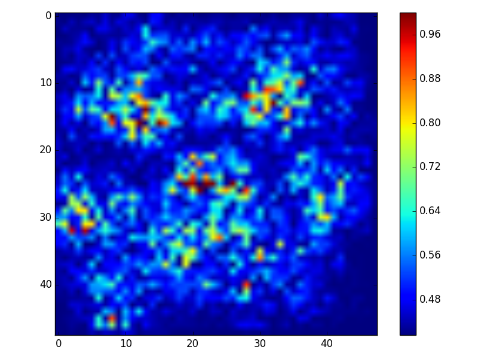
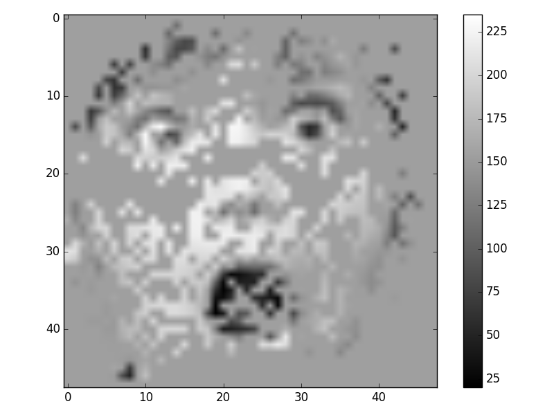

# Problem 4: Analyze the Model by Plotting the Saliency Map
Problem Description:
* Given an image and its corresponding class, we would like to rank the pixels of original image based on their influence on the distribution of final output
* Use your trained CNN, get the gradient of input image and plot it, or you can use the other method mentioned in class to plot the saliency map
## 範例
* **[Note] 請不要直接使用助教的圖來當成作業交上來**
* **[Note] 請不要使用這張範例圖**
<img src="17.png" alt="Drawing" style="width: 200px;"/>
#### Heatmap
<center>原圖</center>| <center> Saliency Map</center> | <center>Mask掉heat小的部份</center>
:-------------------------:|:-------------------------:|:------------------------:
<img src="17.png" alt="Drawing" style="width: 400px;"/>||
## Reference
→ [Deep Inside CNN: Visualizing Image Classification Models and Saliency Maps](https://arxiv.org/pdf/1312.6034.pdf)